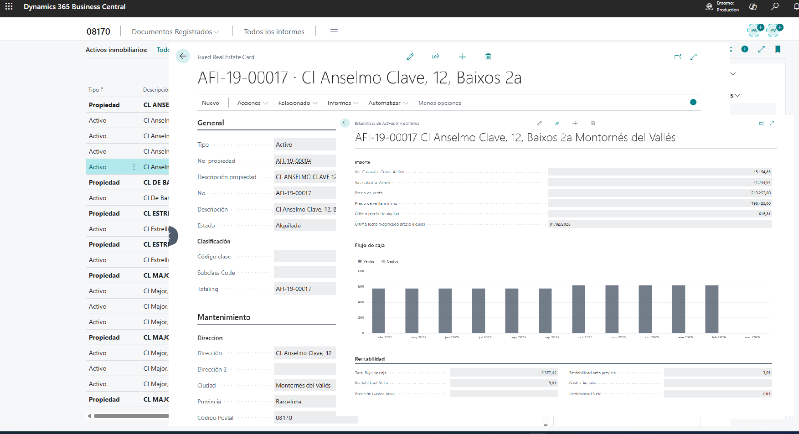
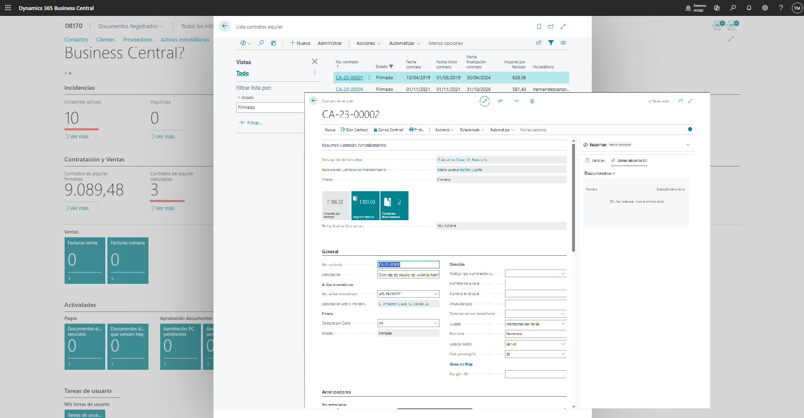
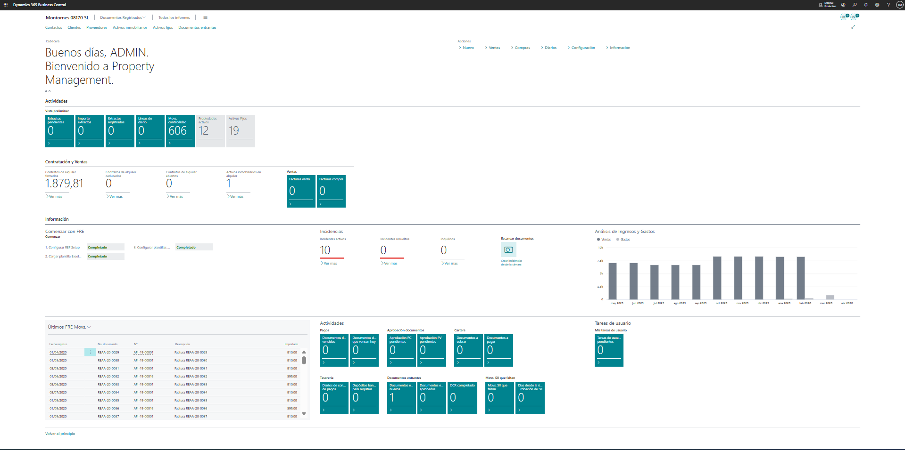

Control por activo
Cada inmueble concentra su contexto operativo: datos, estado, imágenes, relaciones, incidencias, contratos y movimientos financieros.
OneData Family Office centraliza activos inmobiliarios, alquileres, incidencias, seguros y control económico dentro de Business Central, con una base preparada para automatización, trazabilidad y crecimiento.
Pensada para patrimoniales, promotoras, gestoras, administradores, family office y organizaciones con cartera propia o arrendada.
Centraliza la operativa inmobiliaria y la vincula a su impacto económico: desde la ficha del inmueble y el contrato, hasta el movimiento registrado, la incidencia, el seguro, la liquidación o la información fiscal.
La solución reúne la gestión del inmueble, su contrato y su actividad económica en una experiencia más unificada dentro de Business Central.
Cada inmueble concentra su contexto operativo: datos, estado, imágenes, relaciones, incidencias, contratos y movimientos financieros.
La gestión de alquileres gana trazabilidad con información contractual, vencimientos, revisiones, facturación y cierre ordenado.
El modelo FRE añade una capa financiera específica para el patrimonio inmobiliario, con diario, libro histórico, extractos e integración con diario general.
La landing se ha alineado con funcionalidades existentes en la solución: activos inmobiliarios, contratos, liquidaciones, finanzas FRE, extractos, integración con diario general, seguros, incidencias, fiscalidad e integración API.
Ficha avanzada de Fixed Real Estate con información descriptiva, datos operativos, relaciones y acceso directo a movimientos y acciones relacionadas.
Modelo orientado a Lease Contract, Lease Invoice Header y procesos asociados para administrar la relación contractual y su evolución.
La solución permite registrar y mantener el histórico del índice de referencia de alquiler por inmueble, con apoyo a la consulta manual del portal oficial y una referencia activa visible en la ficha del activo.
La solución incorpora páginas y estructura específica para Liquidación Contrato, con soporte para motivos, importes y documentación vinculada al cierre.
Motor financiero específico para registrar movimientos por activo inmobiliario, con diario operativo, role center y libro histórico.
La solución ya contempla importación desde Excel tanto para FRE como para diarios generales, con vista previa, validación, sugerencia de activo y configuración de diarios por defecto.
Los procesos contables estándar de Business Central pueden convivir con la capa inmobiliaria para mantener trazabilidad entre el apunte contable y el movimiento FRE.
Gen. Journal.Row No. y Entry Category.FRE Ledger.Existe gestión de incidencias inmobiliarias con seguimiento, comentarios, adjuntos, notificaciones y relación con la póliza del inmueble cuando procede.
La solución amplía la ficha del activo con pólizas de seguro y permite reutilizar esa información cuando una incidencia debe comunicarse a la aseguradora. Si la póliza se registra sobre un activo de tipo Propiedad, la vinculación se extiende también a los activos de tipo Activo relacionados.
Propiedad a activos tipo Activo relacionados.OneData Family Office incorpora una gestión específica del índice de referencia de alquiler para conservar histórico por inmueble, recalcular importes y dejar visible la referencia vigente dentro de Business Central.
Acceso directo al portal oficial SERPAVI / MIVAU desde la ficha del inmueble.
Alta de una línea con fecha, precio mínimo y precio máximo de referencia.
La superficie construida se recupera automáticamente y se recalculan los importes totales mínimo y máximo.
Solo una referencia puede quedar activa por inmueble para evitar ambigüedad operativa.
El último valor activo queda disponible en la ficha y en la lista del activo inmobiliario.
El modelo FRE no se limita a mostrar ingresos y gastos. Añade procesos específicos para importar, validar, registrar y consultar movimientos económicos ligados a cada activo inmobiliario.
Registro manual, importación Excel o extracto bancario.
Vista previa de importación, sugerencia de inmueble y validación de datos.
Posting en diario FRE o diario general según el flujo operativo.
Las líneas del diario general pueden generar automáticamente su reflejo en FRE.
Base para seguimiento económico, imputación y reporting por inmueble.
La gestión de incidencias ya no se queda en el seguimiento técnico. También puede enlazarse con la póliza del inmueble y preparar la comunicación al seguro desde la propia operativa.
El inmueble puede tener una o varias pólizas con sus datos de cobertura, vigencia y contacto, listas para reutilizarse cuando aparece una incidencia.
La incidencia se registra sobre el activo y puede vincularse a la póliza aplicable sin duplicar información.
Desde la incidencia se puede lanzar la comunicación al seguro reutilizando sus datos de contacto.
Se conserva el estado del siniestro, la fecha de comunicación y las referencias del expediente.
La información queda disponible junto al inmueble, la incidencia y su histórico para una consulta rápida.
La solución ya incorpora capacidades funcionales relacionadas con IRPF y puntos de integración orientados a escenarios SaaS y portales.
Cálculo y recálculo de líneas con Grupo IRPF, porcentaje de retención y base fiscal dentro del proceso de alquiler.
La landing mantiene el encaje natural con OneData Fiscal para modelos tributarios y tratamiento fiscal especializado.
Existen endpoints como API Health Check y FRE Bank Statement API, base para portales, servicios externos y procesos automatizados.
La estructura del proyecto ya deja espacio para integración con portal del inquilino, procesos móviles y evolución modular de la solución.
Las vistas actuales del producto refuerzan el mensaje de la landing: control del activo, seguimiento contractual y operativa financiera en el mismo entorno.

Vista central del inmueble con acceso a contratos, incidencias, datos técnicos y movimientos relacionados.

Seguimiento de contratos, contexto del arrendamiento y estructura preparada para facturación y liquidación.

Base visual para explicar la trazabilidad operativa y financiera por activo inmobiliario.
Respuestas rápidas para situar la solución dentro de Business Central y explicar su alcance funcional actual.
Sí. OneData Family Office está concebida como extensión AL para Business Central y utiliza páginas, procesos y modelos de trabajo integrados en el entorno estándar.
Cubre contratos de alquiler, facturación, incrementos de precio, liquidaciones, incidencias, adjuntos, pólizas de seguro, movimientos FRE, importación Excel, extractos bancarios, integración con diario general, IRPF y puntos de integración API.
Sí. La solución incorpora FRE Journal y FRE Ledger, con diarios, plantillas, import preview, extractos bancarios, integración con Gen. Journal y consultas por activo inmobiliario.
Sí. Se pueden mantener pólizas por activo inmobiliario y reutilizar esa información en incidencias para comunicar siniestros y hacer seguimiento básico del expediente.
Sí. La versión actual y la línea evolutiva del producto apuntan a escenarios de mayor complejidad operativa, integraciones externas y crecimiento modular.
Podemos orientar la demostración a activos, contratos, finanzas FRE, extractos bancarios, integración con diario general, seguros, integración fiscal o procesos de explotación económica según el escenario de tu organización.